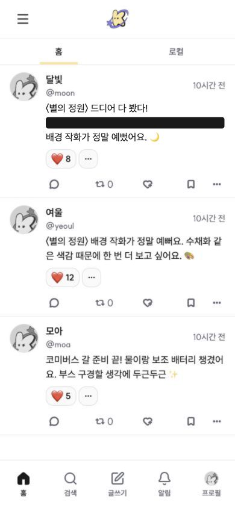
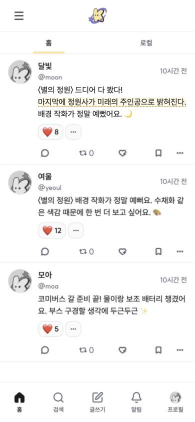
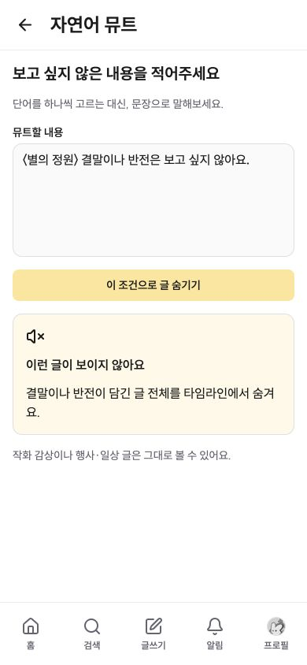

코미버스 · 자연어 뮤트 구상
“〈별의 정원〉 결말이나 반전은 보고 싶지 않아요.”
같은 조건, 두 가지 뮤트 예시
문장만 가릴 때와 글 전체를 숨길 때, 코스모 피드가 어떻게 달라지는지 비교해보세요.
01 · 스포일러 문장만 영역 뮤트
결말을 밝히는 문장 전체를 가려요. 같은 글의 다른 문장과 반응은 남아 있어요.
문장으로 조건 설정
결말·반전은 피하고, 같은 글의 다른 감상은 읽고 싶어요.

가리는 단위: 조건에 해당하는 문장 전체
적용 전
첫 글에 감상과 결말 공개가 함께 있어요. 아래에는 작화·행사 글이 있어요.

첫 글의 두 번째 문장이 결말을 알려줘요.
해당 문장만 가려져요
검은 영역을 눌러 문장을 볼 수 있어요. 다시 누르면 가려져요.


눌러서 가린 문장 보기
다시 눌러 문장 가리기
글은 그대로 남아요. 문장 일부의 단어를 고르는 대신, 해당 문장의 처음부터 끝까지 가려요.
02 · 해당 글을 타임라인에서 숨기기
결말이 담긴 첫 글을 통째로 제외해요. 아래 글이 올라와 빈자리 없이 이어져요.
문장으로 조건 설정
같은 조건으로, 결말·반전이 담긴 글 자체를 보고 싶지 않아요.


숨기는 단위: 조건에 해당하는 글 전체
적용 전
문장 가림 예시와 같은 피드예요. 첫 글에는 결말을 밝히는 내용이 있어요.
결말을 담은 첫 글 전체가 숨김 대상이에요.
글 자체가 보이지 않아요
가림 카드나 안내 행 없이, 작화 감상과 행사 준비 글이 바로 이어져요.

남은 글의 순서는 그대로예요. 같은 작품의 작화 감상은 결말을 밝히지 않아 계속 보여요.